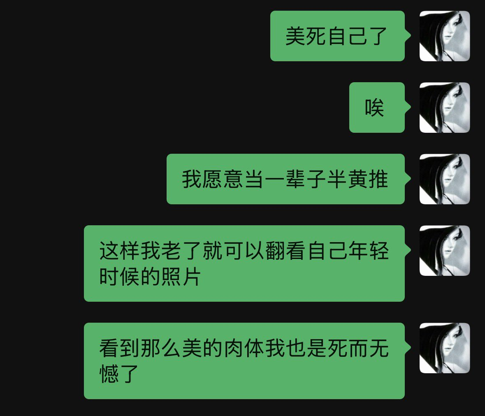

Siper
@Siperistic
@yayayyyyy520 但是如果被墙内看到就会很尴尬吧，隐私问题很难解决

yayayyyyy
@yayayyyyy520
其实我特别想当情侣推主
我的想法很拧巴 因为我觉得正常恋爱的另一半是无法接受自己的爱人是黄推或者是像我一样的半黄推的所以我一直没有恋爱 玩推特就是为了满足自身暴露癖
但我确实是希望也渴望另一半拥有好的身材且愿意和我拍双人合照 这样就是两具非常美好的肉体展现给镜头
大众的赞美会让我很爽 https://t.co/pCrDrAZO57